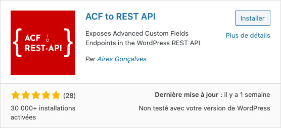

Le Rest API de WordPress est la fonctionnalité préférée des développeurs WordPress n'affectionnant pas particulièrement WordPress 🖤.
Elle permet aux éditeurs de continuer d'entrer/modifier du contenu dans le tableau de bord de WordPress, comme dans tout site WordPress classique. Tout en permettant aux développeurs d'accéder aux contenus en JavaScript via des JSON plutôt que d'avoir à utiliser les templates PHP de WordPress.
Par défaut, le Rest API est déjà présent sur tout site WordPress. Pour y avoir accès, il suffit d'ajouter /wp-json/wp/v2/ à la fin de l'url du site en question.
Par exemple:
https://site.com/wp-json/wp/v2/La page retournée ressemble probablement à un mur de texte illisible. Il s'agit en fait d'un fichier JSON minifié contenant tous les contenus du site, affichés sur une seule ligne.
Si le Rest API de votre site ne répond pas à cette URL, il est probable que votre hébergeur ait modifié son emplacement. Pour le trouver, ouvrez le code source de votre page d’accueil et cherchez "wp-json/".
Pour des raisons de performance et de facilité de traitement, il est généralement préférable de ne charger que les informations qui seront utilisées. Pour ce faire, il est possible d'utiliser ce que l'on appelle des routes.
Par exemple, si seulement les pages sont requises, il est possible de spécifier la route
https://site.com/wp-json/wp/v2/pagesQui retournera un JSON ne contenant que les pages publiées.
Dans cet exemple, la partie https://site.com/wp-json/wp/v2 correspond à l'URL de base de l'API. Tandis que /pages est la route spécifiant que seuls les contenus de type page doivent-être retourné.
Si un autre type de publication doit être retourné. Par exemple, les articles, ou en anglais posts, il suffit de spécifier une route différente.
Par exemple: /posts.
https://site.com/wp-json/wp/v2/postsIl est possible de spécifier des routes encore plus précises. Notamment en spécifiant l'ID de la publication désirée.
Par exemple, si seulement la page avec le ID 10 est requis, il est possible de spécifier la route /pages/10.
https://site.com/wp-json/wp/v2/pages/10orderby
Pour trier les résultats d’une requête, il faut ajouter des paramètres à l’URL fournie à la requête fetch. Un premier orderby permet d'indiquer le critère devant être utilisé afin de trier les résultats. Il est entre autres possible de trier par:
Titre
titleIdentifiant
idDate de publication
dateEtc.
Par exemple, par titres:
https://site.com/wp-json/wp/v2/posts?orderby=titleorder
Il est aussi de spécifier l’ordre dans lequel les posts devraient être triés via le paramètre order permettant de spécifier si les résultats doivent être triés par:
ordre croissant asc
ordre décroissant desc
Par exemple, par titres décroissants:
https://site.com/wp-json/wp/v2/posts?orderby=title&order=descPar défaut, un objet correspondant à un post dans le JSON ne contient que le id du featured image lui étant associé. Pour obtenir plus d’informations concernant ce featured image, il faut le spécifier dans l’URL fournie à fetch en lui ajoutant le paramètre _embed.
Par exemple:
https://site.com/wp-json/wp/v2/posts?_embed Chaque post sera alors bonifié d’une propriété nommée _embedded contenant une sous-propriété intitulée wp:featuredmedia. Celle-ci est un tableau contenant des objets correspondant à chaque featured image associée au post.
Il est donc possible d’accéder à toutes les propriétés associées à cette image telles que: sa date de création, son alt et surtout son URL.
Par exemple, afin d’obtenir l’URL de la 1re featured image:
referencAuPost._embedded['wp:featuredmedia'][0].source_urlPar défaut, les informations stockées dans des champs ACF ne sont pas retournées par le Rest API de WordPress. Heureusement, il est possible de les inclure facilement en ajoutant l'extension ACF to REST API de Aires Gonçalves.
Aussi tôt l'extension installée, les champs ACF seront visibles dans le JSON retourné dans une propriété nommée ACF.
Une fois les JSONs désirés identifiés, il ne reste plus qu'à afficher leurs informations!
Par exemple, dans la page single.php servant à afficher les articles, il serait possible de déclarer une balise <script> et d'effectuer un fetch afin de récupérer les informations de l'article courant:
fetch("/wp-json/wp/v2/posts/<?php the_ID(); ?>")
.then(response => response.json())
.then(data => console.log(data));the_ID() est une fonction de WordPress retournant le id de la page courante, ex: 10.